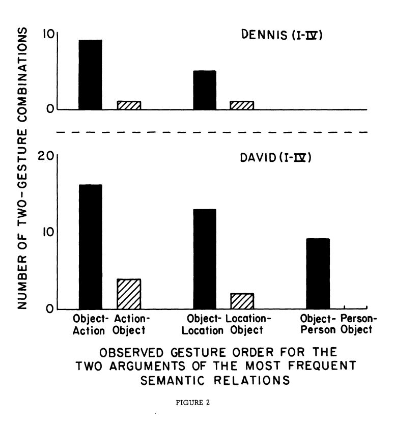

Conor HoughtonPapers 2024-11-08 We discussed the topic of my upcoming debate with Jeff Bowers as part of Seán Froudist-Walsh's unit "Cognitive AI": Is psychology or neuroscience more important to consider when building models of human intelligence> I am to debate the "neuroscience" side. The strategy will be to concede that psychology has framed the question and will determined its outcome, but has proved useless at actually making progress on it. New ideas must come from facts, while neuroscience is boring, psychology is useless. 2024-11-01 George led a discussion of his new project, now funded by the Jean Golding Institute: jeangoldinginstitute.blogs.bristol.ac.uk 2024-10-25 We watched this talk: Michael C Frank. Bridging the Data Gap Between Children and AI Models from last years CCN. He tries to work out how to train models on the same stimuli children train on, his main contribution is collecting and curating huge amounts of child point-of-view video and audio using a custom-made helmet mount for a GoPro. The models don't learn as much from this as the child; is this surprising? He claims it is and tries to pin down why, it seems so far from being likely to work that it is unlikely to help work out the difference. Cool data though and nice to formulate the problem so precisely.2024-10-18 We looked at this amazing paper: Goldin-Meadow, Susan, and Heidi Feldman. The creation of a communication system: A study of deaf children of hearing parents. Sign Language Studies 8.1 (1975): 225-233.
which describes a variant of the forbidden experiment - parents, note, it is forbidden for a reason - in which the hearing parents under the foolish and damaging oralist delusion raise their deaf children without any contact with sign language. The children, denied any real language turn their parents' unconscious gestures into signs and these signs into the start of a language, as evidenced by the children's use of two gesture phrases when the parents use the gestures in isolation, and by there consistent ordering of the gestures by type, as shown in this graph.  |